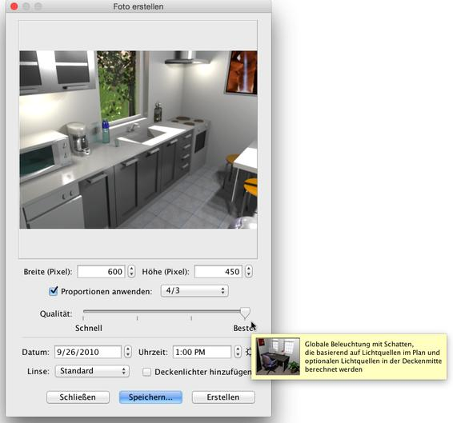
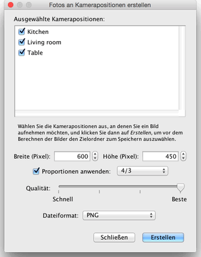

| Fotos erstellen | |||
Um 3D-Bilder oder Fotos Ihrer Wohnung zu erstellen, wählen Sie den Menüeintrag 3D-Ansicht > Foto erstellen... oder klicken Sie das Foto erstellen-Werkzeug an.
Daraufhin wird das folgende Dialogfenster angezeigt, in dem die Größe, die Qualität und weitere Einstellungen, die zur Erzeugung des Bildes benötigt werden, angeboten werden. Außerdem enthält der Dialog die Schaltfläche Erstellen, welche die Bildberechnung anstößt, sowie die Schaltfläche Speichern..., über die das angezeigte Bild gespeichert werden kann, sobald es generiert wurde.  Falls Sie eine andere als die Standardgröße des Bildes wünschen, wählen Sie eine andere Breite und Höhe.
Ist die Option Proportionen anwenden aktiviert, so wird die Höhe bei jeder Änderung der Breite automatisch
entsprechend des Proportionsmodus, der in der Auswahlliste eingestellt ist, angepasst. |
|
|||||||||||||


In den zwei besten Qualitätsstufen ist das Ergebnis abhängig vom Standort und der Stärke der Lichtquellen. Standardmäßig wird das Bild für die Mittagszeit berechnet, wobei an der Decke jedes Raums zusätzliche Lichtquellen eingefügt werden. Wenn Sie die Lichtquellen in Ihrer Wohnung genauer kontrollieren wollen, probieren Sie aus, die Option Deckenlichter hinzufügen zu deaktivieren. Fügen Sie dann einige Elemente aus der Kategorie Lampen im Wohnungsplan ein und justieren sie ihre Leuchtkraft entweder über den Leuchtkraftanfasser oder über den Einstellungsdialog. Die Lichtstärke der Sonne, ihre Farbe und die Richtung der Strahlen hängen von der Tageszeit und dem gewählten Datum, aber auch von der Ausrichtung des Plans nach Norden sowie der geografischen Position und der Zeitzone ab. Die letztgenannten Parameter werden über den Kompassdialog bearbeitet. Die globale Helligkeit des Bildes hängt auch von der Beleuchtung ab, die im Dialogfeld Verändere 3D-Sicht gewählt werden kann. Abgesehen davon erlaubt das Foto erstellen-Dialogfeld die Auswahl einer der folgenden vier Linsenarten.
Wenn Sie mehrere Fotos auf einmal berechnen lassen möchten, speichern Sie die Kamerapositionen, an denen Sie interessiert sind, mit dem Menüeintrag 3D-Ansicht > Kameraposition speichern... und wählen Sie dann den Menüeintrag 3D-Ansicht > Fotos von Kamerapositionen aus erstellen.... Ein Dialogfeld, in dem Sie die Größe, die Bildqualität, sowie das Dateiformat der berechneten Bilder einstellen können, wird angezeigt, bevor die Bilder berechnet und im von Ihnen gewählten Ordner gespeichert werden. In den zwei höchsten Qualitätsstufen werden Werte, die Sie zum Zeitpunkt des Speicherns einer Kameraposition im Foto erstellen-Bereich eingegeben haben, verwendet. Dies betrifft Datum, Uhrzeit, sowie die für die Kameraposition verwendete Linse.  |


|